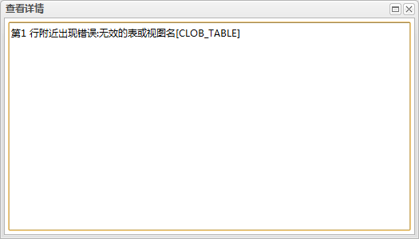

刷新
刷新 添加/删除
添加/删除
 。
。从数据库监控面板中的数据库列表的操作下拉菜单中点击自定义SQL分析可以打开自定义SQL分析面板，该页面用于查看数据库的自定义SQL执行情况。如下图所示:
功能按钮列表
| 按钮 | 说明 |
|---|---|
| 刷新 |
刷新自定义SQL执行信息列表。 |
| 添加/删除 |
添加或删除自定义SQL监控。点击打开自定义SQL监控管理对话框。 |
|
对自定义SQL执行信息列表进行sql关键字的过滤。搜索输入框中输入内容，敲下回车或者点击。 |
自定义SQL列表
| 字段 | 说明 |
|---|---|
| sql语句 | sql语句内容。 |
| 状态 | 执行是否成功。表示执行失败，点击可以查看失败原因，打开对话框如下：  |
| 执行结果 | sql语句执行结果。 |
| 时间 | 执行时间。 |
| 历史记录 | 点击 打开自定义SQL执行历史对话框，查看sql语句执行的历史信息。 打开自定义SQL执行历史对话框，查看sql语句执行的历史信息。 |
时间按钮

点击按钮可以切换查看最近各个不同时间段内的自定义SQL执行结果。
自定义sql执行历史图表
图表展示了自定义sql在各个时间的执行结果。横坐标为时间，纵坐标为自定义sql执行结果。